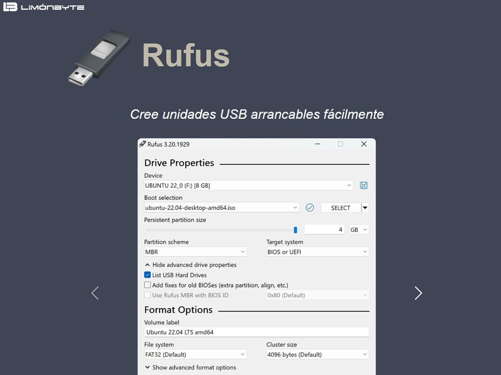

Introducción
Un USB booteable es una memoria USB que contiene un sistema operativo o un instalador que se puede cargar directamente al iniciar la computadora. En esta guía, explicamos el proceso de forma general y segura, con precauciones básicas.

Requisitos
- Una memoria USB de al menos 8 GB (preferible 16 GB o más para ISOs grandes).
- Archivo ISO del sistema operativo o del instalador que quieres usar (por ejemplo, Windows, Linux, etc.).
- Una computadora con acceso a Internet para descargar herramientas o imágenes ISO.
- Permisos de administrador en la computadora (para crear el USB booteable).
Importante: asegúrate de respaldar cualquier dato en la USB, ya que el proceso suele formatearla y borrará todo su contenido.
Pasos generales para crear un USB booteable
- Descargar la ISO:
- Obtén la imagen ISO oficial del sistema operativo o del instalador que necesitas.
- Verifica la integridad de la ISO si es posible (sumas de verificación).
- Conectar la USB y abrir la herramienta de creación:
- Conecta la memoria USB a la computadora.
- Abre la herramienta adecuada para tu sistema (se muestran ejemplos más abajo).
- Elegir la ISO y la unidad USB:
- Selecciona la ISO descargada.
- Selecciona la letra de la unidad USB correcta para evitar borrar otra unidad por error.
- Iniciar el proceso:
- Ejecuta la creación del USB booteable y espera a que termine.
- Al finalizar, cierra la herramienta y expulsa la USB con seguridad.
- Probar el USB:
- Reinicia la computadora y entra en el menú de inicio (BIOS/UEFI) para seleccionar la USB como dispositivo de arranque.
- Verifica que el sistema se carga desde la USB.
Herramientas recomendadas
Aquí tienes ejemplos de herramientas populares para crear USB booteables. Incluyo comandos básicos para que puedas entender el proceso (en un entorno seguro y educativo).

En Windows
- Rufus (interfaz gráfica): permite seleccionar la ISO y la USB, y crea el USB booteable.
- Windows USB/DVD Download Tool (para ISOs de Windows antiguas).
En macOS
- Unetbootin o la Terminal con `dd` (peligroso si se usa mal; se recomienda seguir tutoriales).
En Linux
- Ventoy, Unetbootin, o herramientas como `dd` y `mkusb`.
Aviso: las herramientas pueden variar según el sistema y la versión. Siempre verifica la fuente oficial.
Consejos de seguridad y ética
- Solo intentes booteos en equipos donde tengas permiso para hacerlo.
- No uses imágenes ISO de fuentes no confiables.
- Respaldar datos importantes antes de formatear o modificar dispositivos.